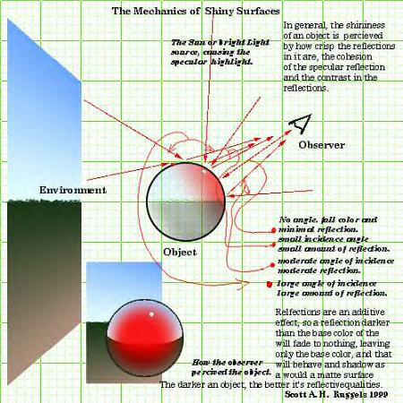

Environment Mapping
This is a simple, and shortened definition of its use within Unreal Tournament.
Basically, an object is made to reflect an arbitrary image (or texture) by placing the said image on the inside surface of a cube or sphere, then mathematically placing the selected object inside the cube/sphere where the inside surface of the cube/sphere (covered with the image) is reflected. Used best with a texture that will look natural when reflected but obscured enough to be unrecognizable. E.g. a solid color texture will not work.
Using this usually just gives the illusion of reflectivity or "shininess" on a mesh, with a similar effect to skyboxes in reference to "point of perspective".
Another form of environment mapping is making an object reflect its surroundings dynamically, much like the mirror option for surface properties of world geometry in maps. This method involves quite complex operations and a lot of slow down if used frequently. The calculations are simpler in the previous case. (Foxpaw: How can we set a material to do this?)
AlphaOne: I think that [marblemadness2003] mod does dynamic reflections. Here is what they say they did: [forum thread]
Foxpaw: Unless I'm reading that wrong.. they explicitly state that they did not use dynamic reflections on that thread.
AOANLA: You are reading it wrong. Apparently they generate a new environment map each frame, and pass that to the rendering code, as UT 2003 itself doesn't generate dynamic maps. So... it's a workaround.
AlphaOne: It looks like they have a problem with tiling.
Here is a diagram of the latter method. (not really used int Unreal, but helps understand the concept)

Dont remember the site i got this from, but it was made by Scott Ruggels |
Links
- Here is another link with pictures: http://home.san.rr.com/thereindels/Mapping/Mapping.html
Category To Do - There should be some description of how to do this in UnrealED. Also both the links above are broken!